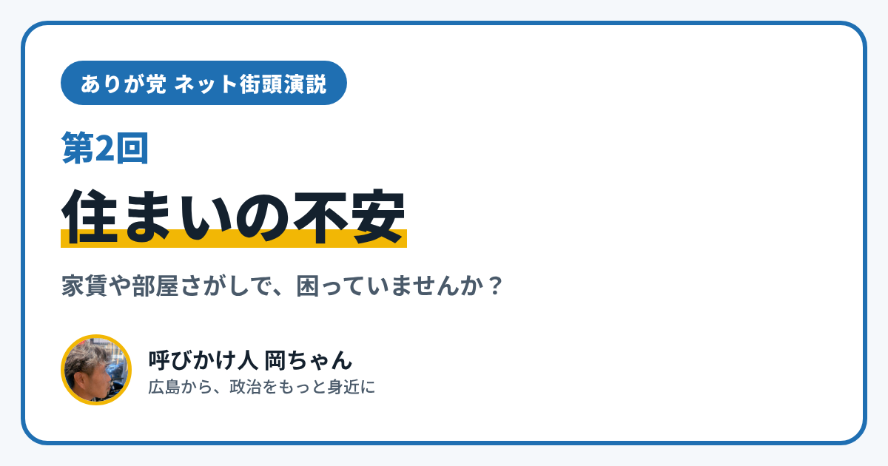

ありが党 ネット街頭演説 第2回｜住まいの不安

こんにちは、ありが党の呼びかけ人、岡ちゃんです。今日のネット街頭演説のテーマは「住まいの不安」です。
仕事が減って家賃が払えるか心配になったこと、ありませんか？ 年齢や障がい、ひとり暮らしであることを理由に、部屋を借りるのがむずかしいと感じたことはありませんか？
今日は、住まいを支える国のしくみを2つ紹介します。
家賃や引っ越しを助ける「住居確保給付金」
1つめは「住居確保給付金」です。2025年4月の国の制度改正で、2種類の支えがある制度になりました。
- 家賃の補助：仕事をやめたり、自分のせいではない理由で収入が大きく減ったりして、家賃に困っている人に、仕事さがしの支えとあわせて、家賃を原則3か月補助します（条件により、最長9か月まで延長できます）
- 引っ越し費用の補助：収入が大きく減って、家賃の安い家に移ることで家計が立て直せると認められた人に、引っ越しの費用を補助します
使えるかどうかは、収入や貯金などの条件で決まります。くわしくは、お住まいの市町村の生活の相談窓口で確かめてみてください。
見守りつきの「居住サポート住宅」
2つめは、2025年10月に始まった「居住サポート住宅」です。大家さんと、住まいの支援をする団体などが力を合わせて、日ごろの安否確認や訪問による見守りをし、暮らしや体の調子が不安定になったときには福祉のサービスにつなぐ住宅です。高齢の人、障がいのある人、収入の少ない人など、部屋を借りるときに困りやすい人が、安心して入居できるようにするためのしくみで、市区町村などが認定します。
僕が大事にしたいこと
僕は、住まいの不安は「自分のがんばりが足りないから」と、ひとりで抱えこまなくていいものだと思っています。そして、せっかくの支えのしくみも、知られていなければ届かないと思っています。だから、むずかしい言葉を使わずに伝えたいです。
あなたは、住まいのことでどんなことに困っていますか？ 家賃、部屋さがし、バリアフリー、ひとり暮らしの心細さ。小さなことでも大丈夫です。InstagramのDM（@ayu19841002）や、ありが党のページから、あなたの暮らしの声を聞かせてください。
ありが党は、まだ僕ひとりから始めたばかりです。政治をもっと身近にしたいと思う方、一緒に考えてくれる仲間を探しています。InstagramのDM（@ayu19841002）で気軽に声をかけてください。